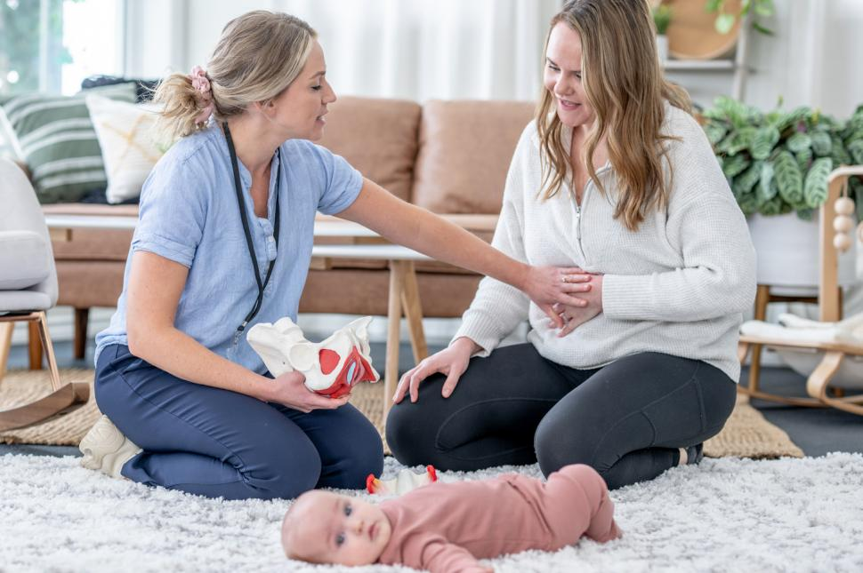
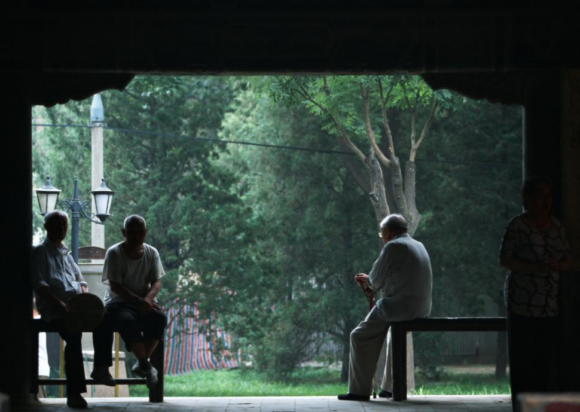

各个生命阶段的运动注意事项
本章节按"核心机制/背景→运动指南（FITT）→安全注意"结构组织
跨人群通用原则
医学许可与筛查
● 所有特殊人群开始运动前需获得医学许可（尤其合并慢性病者）
● 使用PARmed-X等筛查工具进行运动前健康评估
● 慢性病患者需与医师沟通，了解运动禁忌症和限制
运动处方通用框架
● 心肺：FITT-VP（频率、强度、时间、类型、进阶、变化）
● 肌力：频率、强度、时间、类型
● 强度监控：谈话测试、RPE、VT1/VT2——不同人群适用不同监控方式
ACE IFT模型适用性
● 三大人群均可使用ACE整合式健身训练模型
● 需根据人群特点调整评估方式和计划设计
● 评估本身不必与成年人完全区分，但需注意趣味性和安全性
行为改变与社会支持
● ACE Mover Method + ABC Approach适用于所有人群
● 社会支持是坚持运动的关键因素（家庭参与、同伴鼓励）
● 运动计划设计应考虑个人目标、能量波动和日常限制
一、青少年

图8-1
1.1 背景与现状
核心问题
● 仅20-26%的美国青少年达到身体活动推荐水平（2018年报告卡评分D-）
● 全球青少年身体活动和久坐行为平均得分均为D
● 活动水平随年龄增长而下降：16-19岁仅5%达标
● 女孩活动参与度显著低于男孩
● 原因：学校体育要求降低、屏幕时间增加（45%高中年龄青少年每日>3小时）、社区安全性不足
缺乏活动的后果
● 儿童期肥胖、高血压、2型糖尿病、骨质疏松症、动脉粥样硬化
● 久坐习惯延续至成年→形成代际恶性循环（父母不运动→子女不运动可能性高6倍）
身体素养（Physical Literacy）
● 定义：进行身体活动的能力、信心和意愿
● 核心目标：帮助孩子掌握跑、跳、平衡等基本运动能力
● 策略：将提高身体素养作为家庭运动计划基础，强调努力而非成绩
1.2 青少年运动指南
核心原则
● 每天总计≥60分钟中等至高强度身体活动
● 包含心肺活动 + 适合年龄的肌肉强化 + 骨骼强化运动
● 每周累积总量比单一组成部分（频率/强度/持续时间）更重要
● 骨骼强化对青少年尤为重要——骨量最大增长发生在青春期前和青春期
肌肉训练的安全性与有效性
● 误区澄清：青春期前儿童可安全进行肌肉训练（在适当监督下）
● 无证据显示适当监督的渐进式肌肉训练会导致生长迟缓或骨骼损伤
● 研究数据：10个月简单肌肉训练使9岁女孩骨密度增幅达对照组4倍（6.2% vs 1.4%）
● 肌肉训练损伤风险记录优于其他体育活动
FITT建议
表8-1
| 维度 | 有氧 | 抗阻 | 骨骼强化 |
|---|---|---|---|
| 频率 | 每天 | ≥3天/周 | ≥3天/周 |
| 强度 | 大多数为中等强度（HR和呼吸明显增加）至高强度（HR和呼吸大幅增加），高强度每周≥3天 | 次极量重复8-15次，达到中度疲劳 | N/A |
| 时间 | 作为每天≥60分钟运动的一部分 | 作为每天≥60分钟运动的一部分 | 作为每天≥60分钟运动的一部分 |
| 类型 | 适合年龄的愉悦活动：跑步、游泳、骑车、跳舞、足球、篮球、网球 | 非结构化（爬树、拔河、 在运动场设备上攀爬）或结构化（自重/阻力带/器械） | 跑步、跳绳、篮球、网球、抗阻训练、跳格子 |
1.3 安全注意
肌肉训练安全指南
● 始终对儿童进行适当监督，采用正确技术
● 传统健身器材可能不适合孩子的杠杆臂——优先选择自由调节重量器材或自重运动
● 切勿鼓励单纯的大重量托举或爆发性动作
● 教导正确呼吸方式（避免Valsalva）
● 鼓励运动前/中/后充分饮水
● 告诉孩子感到疲劳/乏力/不适/痛苦时立即沟通
极端环境防护
● 高温风险因素：体表面积/质量比高、出汗能力弱、运动经济性低
● 极冷风险：脱水、低温症、冻伤——保持补水和分层穿衣
● 冷空气湿度低→加重哮喘/运动诱发性支气管痉挛
● 关注气象部门高温/寒冷警告，必要时移至室内
● 佩戴护具的运动更需注意热相关疾病
过劳性损伤与体育专业化
● 全年单一运动→重复性发力→过劳性损伤风险↑
● 多样化体育活动增强本体感受、多维力量、敏捷性、速度
● 遵循周期化原则——职业运动员不会全年不断比赛，青少年也应如此
● 运动必须适合年龄、强度适当
🔑 青少年关键记忆点
● 每天≥60分钟；骨骼强化特别重要（骨量增长窗口期）
● 肌肉训练安全（有监督）；避免大重量和爆发力
● 避免体育专业化和过劳性损伤；遵循周期化
● 高温/极冷环境需特殊防护
二、孕期与产后女性
2.1 孕期

图8-2
生理变化
身体结构与重心
● 建议增重：25-35磅（11.4-15.9kg），孕前体重不同则建议不同
● 腹围增长→背部、骨盆、髋部、腿部承受额外压力
● 重心向上向前移→影响平衡和协调性
● 孕前通过深蹲、弓步、硬举增强腿后侧和躯干力量，为增重做准备
激素变化
● 松弛素↑→骨盆增大（利于分娩）但所有关节松弛度增加→旧伤复发风险/关节不稳
● 需要力量和稳定训练增加身体稳定性
● 恶心和疲劳（妊娠早期最常见，但任何阶段都可能发生）
心血管变化
● 心力储备（静息与最大心脏功能之差）减小
● 心率、血容量、心搏量、心输出量↑（孕早期即开始）
● 短暂中等强度运动后可能感觉喘不过气→增加休息时间
● 避免静止姿势（如仰卧），因可导致静脉回流减少和低血压
体温调节
● 散热能力略有提高（皮肤血流↑+潮气量↑）
● 运动前必须知晓环境温度
● 环境温度/湿度升高→显著影响散热→可能导致高热症
● 尚无运动相关高热症引起胚胎/胎儿畸形的报告
运动指南
核心建议
● 每周≥150分钟中等强度有氧运动，至少3天
● 不论产前运动经历如何，孕期在医师指导下运动都有益且安全（ACOG 2015）
● 运动可降低：先兆子痫、妊娠期糖尿病、剖腹产、下背痛、焦虑、恶心、胃灼热、失眠、腿痛性痉挛发生率
● 孕前喜爱运动者：可继续原有计划（安全运动强度上限尚未确定）
● 孕前不爱运动者：缓慢开始，进阶至中等强度（可能需从<10分钟间歇性运动起步）
强度监控
● 谈话测试优于心率监控
● 结果<VT1 = 中等强度
● 中等强度：MET 3-5.9，RPE 12-13（6-20量表）
● 高强度（MET≥6，RPE 14-17）仅适合孕前已运动或想要提高健康水平的女性
FITT建议
表8-2
| 维度 | 有氧 | 抗阻 | 柔韧性 |
|---|---|---|---|
| 频率 | >3-5天/周 | 不连续的2-3天/周 | >2-3天/周（每天最有效） |
| 强度 | 中等（MET 3-5.9，RPE 12-13）；高强度适合孕前已运动者 | 次极量重复8-10次或12-15次，中度疲劳 | 拉伸至紧缩感或轻微不适 |
| 时间 | 每天≥30分钟，每周≥150分钟中等或≥75分钟高强度 | 初学者1组；中高级2-3组 | 静态拉伸保持10-30秒 |
| 类型 | 负重和非负重均可：徒步、团体运动、游泳（水中运动减轻腰腿压力） | 器械、自由重量、自重：坐姿推胸、哑铃、弓步 | 静态和动态柔韧性运动，每个肌群 |
安全注意
绝对禁忌——终止运动的警示性体征
● 阴道出血
● 宫缩阵痛
● 羊水泄露
● 用力前呼吸困难
● 眩晕或感到昏晕
● 头疼
● 胸痛
● 影响平衡的肌无力
● 小腿疼痛或肿胀
运动禁忌与避免事项
● 避免高风险/可能腹部创伤的运动（接触性项目、滑雪、冲浪）
● 避免极端高温环境（如热瑜伽）
● 避免长时间仰卧姿势
● 某些运动可能需要调整或与产科护理者讨论（慢跑、球拍运动等）
营养与补水
● 运动前后充分补水
● 运动前吃小零食避免低血糖（尤其中等强度>45分钟时）
● 平衡热量摄入
腹直肌分离（Diastasis Recti）
● 腹直肌两肌腹分离，可达1-2英寸（2.5-5.1cm）
● 孕期发病率高达45%，产后12个月仍达33%
● 孕前和孕期运动可减少35%发病率
● 推荐运动：腹横肌等长收缩、姿势肌和腹部力量训练
● 注意评估腹直肌分离情况后再设计核心训练
2.2 产后

图8-3
核心要点
恢复原则
● 分娩体验因人而异，产后激素水平继续变化
● 疲劳常见（激素变化+身体需求+睡眠中断）
● 产后贫血常见→与生活质量下降、认知能力减弱、情绪不稳/抑郁相关
● 剖腹产需额外恢复时间（开刀手术）
● 流产和死产的悲痛支持：25%妊娠以流产告终，1%死产
运动恢复指南
● 产后几天/几周内，根据医生建议逐渐增加运动量
● 慢慢开始：先增加持续时间和频率，再增加强度
● ACOG建议每日20-30分钟（步行+简单主要肌群强化）
● 异常疼痛（尤其外阴切开术/剖腹产后）→停止运动并咨询医师
● 比正常月经更重的鲜红阴道流血→停止运动并就医
● 目标：9-12个月回到孕前运动强度水平
哺乳期注意
● 热量和营养需求增加→需同时满足运动和母乳需求
● 充分饮水
● 长时间抱孩子→头部前倾和圆肩风险↑
● 计划设计应包括：后背与后肩运动（坐姿划船）+ 前肩和胸肌拉伸
计划设计重点
● 考虑剖腹产伤口愈合或腹直肌分离情况
● 增加躯干力量和稳定性运动
● 制定简单的10分钟可完成运动计划（照顾孩子时间有限）
● 鼓励多散步（可带孩子一起）
🔑 孕期与产后关键记忆点
● 孕期：每周≥150分钟中等强度，谈话测试监控（<VT1）
● 孕期：避免仰卧、高温环境、接触性运动
● 孕期：警示性体征9项（见上方清单）
● 松弛素影响所有关节→关节不稳风险↑
● 腹直肌分离：孕期发病率45%，运动可减少35%
● 产后：慢慢开始，9-12个月回到孕前水平
● 产后：关注哺乳期营养补水+圆肩/头部前倾
三、老年人

图8-4
3.1 衰老的结构性变化
肌肉骨骼系统
● 肌肉质量↓→力量和耐力↓（生活方式变化+神经肌肉功能减弱）
● 骨骼更脆弱多孔→骨折风险↑
● 钙损失→骨量下降（负重和肌肉训练可维持）
● 约20%髋骨折老年人死于相关并发症
● 瘦体组织↓ + 体脂↑ + 基础代谢率↓
平衡与稳定性
● 三大平衡系统均受衰老负面影响：
● 视觉系统（最主要的本体感受输入通道）→衰退
● 前庭系统（头部空间位置信息）→功能下降
● 躯体感觉系统（肌肉/关节本体感受器、皮肤/压力感受器）→功能下降
● 平衡和协调性↓→跌倒和相关损伤风险↑
认知与心理健康
● 认知能力下降→平衡能力、注意力、专注力下降
● 抑郁症和焦虑症风险↑
● 失去家人朋友→社会化程度↓
● 身体活动可预防和减缓认知能力衰退（50岁以上人群，无论初始认知状态）
● 运动为老年人提供社交机会和挑战/目标
3.2 老年人运动指南
核心建议
● 每周150-300分钟中等强度 或 75-150分钟高强度 或 两者结合
● 最好将时间分散开
● 多做身体活动可获得额外益处——做些运动总比不做的好
● 缺乏定期运动计划时：一天中多动少坐
● 每周≥2次肌力训练（主要肌群），维持或增加力量和耐力
● 平衡训练必须纳入运动计划→提高本体感受，降低跌倒风险
FITT建议
表8-3
| 维度 | 有氧 | 抗阻 | 柔韧性 |
|---|---|---|---|
| 频率 | 中等：>5天/周；高等：>3天/周；结合：3-5天/周 | ≥2天/周 | >2天/周 |
| 强度 | 0-10量表：中等5-6，高等7-8 | 初学者低强度（40-50% 1-RM）→逐渐过渡至中高等（60-80% 1-RM）；或0-10量表中等(5-6)至高等(7-8) | 拉伸至紧缩感或轻微不适 |
| 时间 | 中等30-60分钟/天；高等20-30分钟/天；可多次累计（每次≥10分钟） | 8-10个动作，1-3组×8-12次 | 保持30-60秒 |
| 类型 | 不带来过多压力的运动：散步；负重困难者选水上运动/固定式自行车 | 渐进式训练、负重健美操、爬楼梯 | 慢速静态拉伸，每个肌群 |
3.3 安全注意与计划设计
评估调整
● 关节炎在65岁以上人群中发病率49.6%——极常见
● 评估顺序建议：先做姿势和柔韧性评估→再调整运动评估
● 膝关节炎客户可能不适合自重深蹲→可改用坐下/站起测试
● 平衡评估：安全第一，单脚站立优于Y平衡测试
● 初始可借助墙壁/门框等外部稳定装置→进阶到拐杖/手杖→最终无外力支持
计划设计重点
● 热身更重要（胶原含量↓+缔结组织弹性↓）→减少受伤风险
● 放松时间用于静态拉伸（肌肉紧张妨碍灵活性/ADL时）
● 平衡运动应在课程早期引入——此时力量最高、专注度最高、受伤风险最低
● 重点放在功能训练上
● 考虑客户能否正常俯身和起身（按摩床/椅可能有用）
● 负重运动首选（在承受范围内）→强化骨骼
● 固定式/卧式自行车：低中心栏方便上下
● 不要为客户设限——激发冒险精神和成就感
● 慢慢增加持续时间和运动量
🔑 老年人关键记忆点
● 150-300分钟中等强度/周；平衡训练必须纳入
● 20%髋骨折老年人死于并发症；负重运动强化骨骼
● 关节炎发病率49.6%（65岁以上）——先评估姿势和柔韧性
● 热身比以往更重要（胶原↓、弹性↓）
● 平衡训练放在课程早期（专注度最高时）
● 运动可预防认知衰退、改善心理健康
各人群关键记忆点总结
表8-4
| 人群 | 关键记忆点 |
|---|---|
| 青少年·活动量 | 每天≥60分钟中等至高强度；骨骼强化在青春期前/青春期尤为重要（骨量增长窗口期） |
| 青少年·肌肉训练 | 安全（有监督时）；避免大重量和爆发力；优先自重/阻力带 |
| 青少年·风险 | 避免体育专业化和过劳性损伤；遵循周期化；高温/极冷环境特殊防护 |
| 孕期·运动量 | 每周≥150分钟中等强度，至少3天；谈话测试监控（<VT1） |
| 孕期·禁忌 | 避免仰卧、高温环境、接触性/高跌落风险运动；注意9项警示性体征 |
| 孕期·激素 | 松弛素↑→所有关节松弛→关节不稳；力量和稳定训练对抗 |
| 孕期·腹直肌分离 | 孕期发病率45%；运动可减少35%；推荐腹横肌等长收缩 |
| 产后·恢复 | 慢慢开始，9-12个月回到孕前水平；剖腹产需额外恢复时间 |
| 产后·注意 | 哺乳期需更多热量/水分；关注圆肩/头部前倾；加入后背和后肩运动 |
| 老年人·运动量 | 150-300分钟中等强度/周；平衡训练必须纳入；≥2次/周肌力训练 |
| 老年人·骨骼 | 20%髋骨折老年人死于并发症；负重运动在承受范围内强化骨骼 |
| 老年人·关节炎 | 65岁以上发病率49.6%；先评估姿势和柔韧性，再调整运动评估 |
| 老年人·计划设计 | 热身比以往更重要；平衡训练放在课程早期；重点放在功能训练 |
| 老年人·认知 | 运动可预防和减缓认知衰退，改善心理健康，提供社交机会 |
肌肉骨骼异常客户的注意事项
第 9章
判断题
判断以下说法是否正确，点击展开参考答案。
查看答案
答案：正确。原文引用2018年报告卡评分D-，仅20-26%的美国青少年达到推荐水平。
查看答案
答案：错误。原文指出久坐习惯延续至成年，形成代际恶性循环——父母不运动→子女不运动可能性高6倍。
查看答案
答案：错误。原文明确澄清：青春期前儿童可安全进行肌肉训练（在适当监督下），无证据显示适当监督的渐进式肌肉训练会导致生长迟缓或骨骼损伤。
查看答案
答案：正确。原文引用研究数据：10个月简单肌肉训练使9岁女孩骨密度增幅达对照组4倍（6.2% vs 1.4%）。
查看答案
答案：正确。原文核心原则明确青少年每天总计≥60分钟中等至高强度身体活动，包含心肺活动+肌肉强化+骨骼强化运动。
查看答案
答案：错误。原文指出孕妇的谈话测试优于心率监控，结果<VT1即为中等强度。
查看答案
答案：正确。原文明确运动可降低先兆子痫、妊娠期糖尿病、剖腹产、下背痛、焦虑、恶心等多种不良结局的发生率。
查看答案
答案：正确。原文指出腹直肌分离孕期发病率高达45%，产后12个月仍达33%，孕前和孕期运动可减少35%发病率。
查看答案
答案：错误。原文指出孕妇应避免极端高温环境（如热瑜伽），因环境温度/湿度升高可显著影响散热，可能导致高热症。
查看答案
答案：正确。原文建议产后慢慢开始，先增加持续时间和频率再增加强度，目标9-12个月回到孕前运动强度水平。
查看答案
答案：正确。原文指出约20%髋骨折老年人死于相关并发症，强调骨骼健康和防跌倒的重要性。
查看答案
答案：错误。原文明确平衡训练必须纳入老年人运动计划，以提高本体感受、降低跌倒风险。每周≥2次肌力训练同样必须纳入。
查看答案
答案：正确。原文指出身体活动可预防和减缓认知能力衰退，适用于50岁以上人群，无论初始认知状态。
知识翻卡
共 12 张知识卡片，点击翻转查看答案
已翻转: 0/12特殊人群运动调整清单
- 儿童青少年：
- 关注动作技能发展，避免过度训练
- 力量训练从轻负荷开始，注重正确技术
- 避免高温环境
- 孕妇：
- 获取医生许可
- 避免仰卧位（孕中期后）、接触性运动
- 注意补水和体温控制
- 产后逐步恢复（顺产数天/剖宫产6-8周）
- 老年人：
- 重点：预防跌倒（平衡训练）
- 力量训练保持独立生活能力
- 关注心血管安全性
- 柔韧性维持关节活动度
- 更年期女性：
- 抗阻训练预防骨质流失
- 有氧运动保护心血管
- 根据年龄调整强度和进阶速度